《名侦探柯南》是超受欢迎的日本长寿国民动漫作品！近30年的连载中，你还记得柯南的主线故事与黑衣组织的搜查进度吗？本篇文章将为大家整理一次与黑衣组织相关的主线剧情大纲、动漫集数对照，各位柯南粉们一起复习一遍吧！
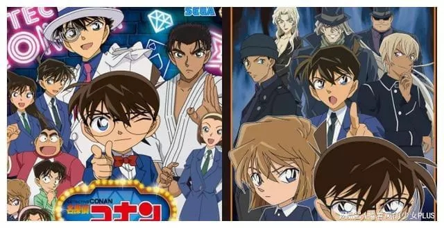
小提醒：以下文章内容将谈论到《名侦探柯南》重要剧情，若想保留观看乐趣、不愿被暴雷者，请先把文章存起来，之后再来阅读！▋柯南主线剧情最关键：快速了解「黑衣组织」目前已知的背景！黑衣组织又被称作黑暗组织，是《名侦探柯南》中出现的虚拟跨国际犯罪组织，成员中的高级干部，会给予以「酒」命名的组织代号，以下将为大家介绍黑衣组织的重要主要成员，不过因为里面潜藏着太多间谍，又被粉丝们讽刺为是间谍培养组织（笑）。
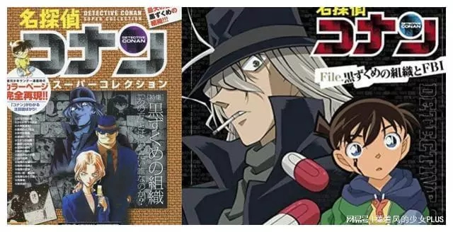
《名侦探柯南》的故事开端，要从有一天主角工藤新一和青梅竹马的小兰去游乐园时说起，新一因不小心撞见黑衣组织进行非法交易，被灌下神秘毒药灭口，意外让身体缩小成小学生的模样，被阿笠博士发现后，便以江户川柯南的假名生活，后来为了搜集更多情报，便借住在毛利家，以善用了小兰的父亲毛利小五郎的侦探身份，接触更多情报。目前黑衣组织的真实名称并未公开，只能透过对话得知与「乌丸集团」有极大的关系，组织的目的、构成也尚未公开，但可知道组织内部的纪律严明，若任务失败或试图逃脱，皆会被杀害，除此之外，组织还大量地雇用药剂师与电脑工程师，似乎在进行着某些神秘的计划。▋「黑衣组织」主要成员角色介绍【重要干部】那位先生、兰姆、琴酒、伏特加、苦艾酒、雪莉那位先生为黑衣组织的老大，初次登场在第30集，为《名侦探柯南》整个故事的黑幕，听说他是在半世纪前99岁的大富豪「乌丸莲耶」，如果还活着的话可能已经超过150岁，是个充满谜团的人物，目前在漫画和动画中皆未公开其真面目，一直以黑影的形式出现。黑衣组织中的第二号人物兰姆（Rum），是「那位先生」的亲信，他的外貌、性别皆是谜团，只知道某只眼睛因为受伤而装上义眼，不过目前已知其身份为寿司店的脇田兼则，名字为假名，外貌也是假扮出来的。
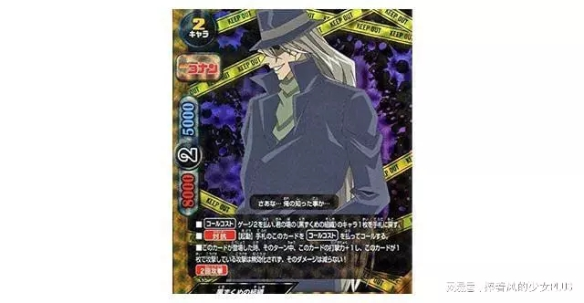
琴酒
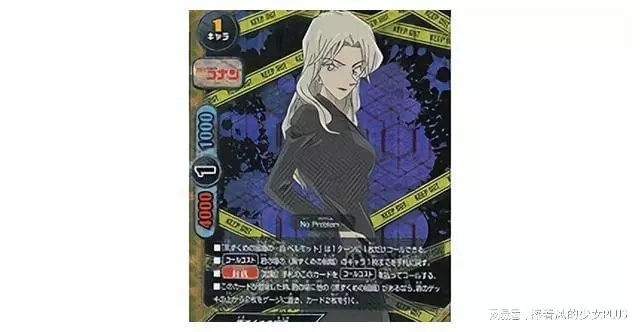
苦艾酒琴酒（Gin）为黑衣组织的高级干部，在组织中负责重要的交易、暗杀欲逃脱或组织内奸，能直接和「那位先生」见面，除了是将工藤新一灌药使他缩小的罪魁祸首，也是杀害宫野明美（灰原哀的姊姊）的凶手，在宫野志保（灰原哀）逃离组织后仍持续追踪其下落。伏特加（Vodka）总是和琴酒一起行动，并称呼琴酒「大哥」，魁梧的身材和墨镜为特征，擅长使用多种武器与驾驶交通工具，并拥有惊人的记忆力，能记住自己杀死的人的所有姓名。苦艾酒（Vermouth）为黑衣组织的高级干部，可以和「那位先生」联络与独自行动的权利，负责情报蒐集与暗杀的任务，在美国纽约时因曾被新一与小兰救了一命，自此暗中保护两人，却因不明原因十分憎恨雪莉（宫野志保）。
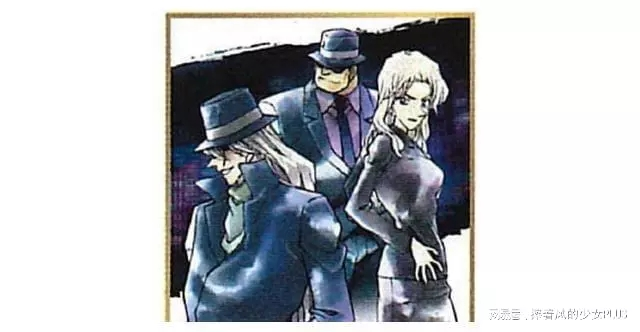
黑衣组织
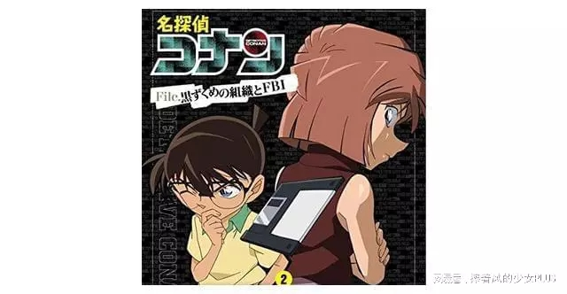
灰原哀雪莉（Sherry）在第18集初次登场，为黑衣组织的科学家，也是「APTX-4869」的研发者，本名宫野志保，父亲宫野厚司、母亲宫野艾莲娜、姊姊宫野明美皆为黑衣组织的成员，但姊姊宫野明美为了让自己脱离组织，执行了抢案，但事后却被琴酒灭口，因父母已双亡，姊姊的死让雪莉大受打击，后来逃出组织，吃下「APTX-4869」后身体缩小并化名灰原哀。【只出现剧场版中的成员】《往天国的倒数计时》：原佳明《漆黑的追迹者》：爱尔兰、冈仓政明《纯黑的恶梦》：库拉索、司陶特、阿夸维特、雷司令【间谍成员】基尔、伊森·本堂、波本、苏格兰、黑麦CIA：基尔（Kir／本堂瑛海／水无怜奈）、伊森本堂
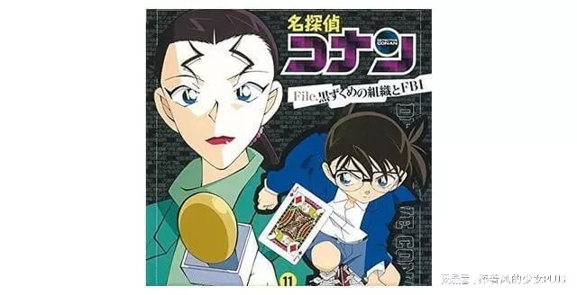
基尔（Kir/本堂瑛海/水无怜奈）基尔本名本堂瑛海，为伊森本堂的女儿，和父亲皆为卧底于黑暗组织的CIA情报员，又化名水无怜奈，表面的公开身份为日卖电视台女主播。因为真实身份差点被琴酒识破，被迫杀害父亲伊森本堂来取得信任，又在某一次的事件中被FBI俘获，被柯南、赤井秀一发现身份后，假装枪杀赤井秀一来取得组织信任，得以再次回到组织进行卧底。警察公安：波本（Bourbon／降谷零／安室透）、苏格兰（Scotch／诸伏景光）
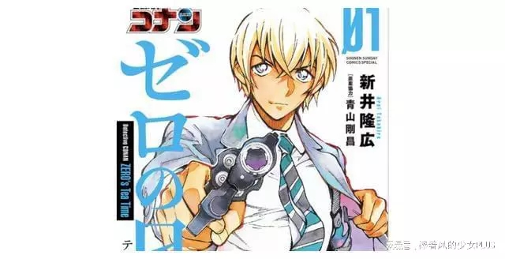
波本（Bourbon/降谷零/安室透）波本本名降谷零，为卧底于黑暗组织内的日本公安警察，化名安室透，表面的公开身分为私家侦探兼白罗咖啡厅的服务生。苏格兰本名诸伏景光，和安室一样为日本公安警察，在卧底身份曝光后，为了破坏手机中的资讯而自杀，但由于当时赤井与降谷零不知道彼此皆为卧底之事，因此赤井在降谷零面前伪装成是他杀害了苏格兰，使得降谷零与赤井之间结下梁子。FBI：黑麦（Rye／赤井秀一／诸星大／冲矢昴）
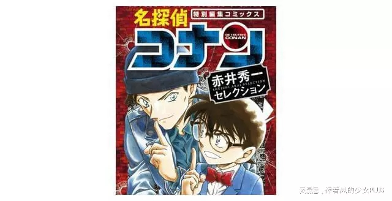
黑麦（Rye/赤井秀一/诸星大/冲矢昴）黑麦本名赤井秀一，曾卧底于黑暗组织的FBI探员，化名诸星大，目前因为身份曝光而被组织追杀，在柯南的协助下成功「诈死」后，以东都大学的研究生「冲矢昴」身分居住在工藤家，暗中保护灰原哀与协助调查组织。▋《名侦探柯南》主线剧情必看动画、漫画集数整理【故事开头～灰原哀的出现】
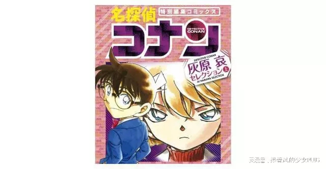
灰原哀
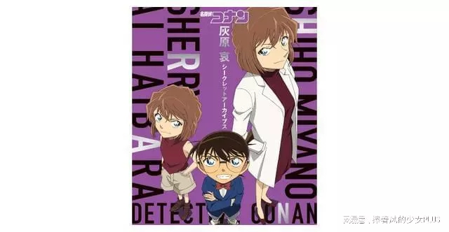
动漫集数标题内容动画第1话漫画第1集云霄飞车杀人事件工藤新一因为撞见黑衣组织的非法交易现场，被琴酒灌药导致身体变小，后化名为江户川柯南。动画第48～49话漫画第10集外交官杀人事件服部平次初登场。动画第54话漫画第12集电玩公司杀人事件黑衣组织的新成员「龙舌兰」（Tequila）登场，却在交易中意外被炸死。动画第57～58话漫画第12～13集福尔摩斯迷杀人事件柯南的真实身份被服部发现。动画第128话漫画第2集黑暗组织十亿元抢劫事件灰原哀的姊姊宫野明美初次登场。为了让妹妹脱离组织而执行抢案，但事后却遭琴酒灭口。动画第129话漫画第18集来自黑暗组织的女子大学教授杀人事件灰原哀（雪莉／宫野志保）首度登场，灰原转学到柯南的学校成为同班同学，并首次公开新一喝下的药「APTX4869」之名字。【苦艾酒篇】
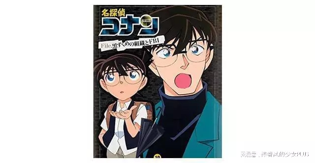
医生新出智明
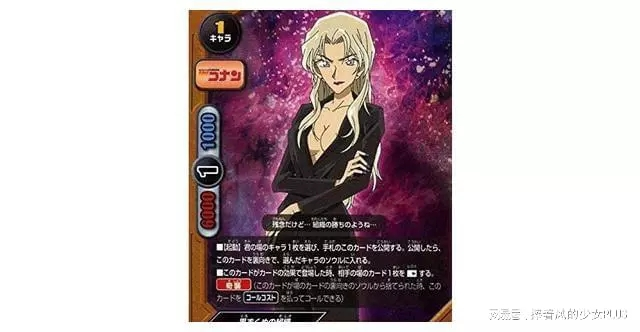
擅长变装的苦艾酒动漫集数标题内容动画第170～171话漫画第24集黑暗中的死角新出智明首度登场，后来会知道新出智明和苦艾酒的真面目有所关联。动画第176～178话漫画第24集与黑衣组织的再会苦艾酒和匹斯可首度登场，匹斯可因为长年服务「那位先生」也和宫野夫妻交情深厚，所以记得灰原小时候的样貌、识破灰原的真实身份，就在灰原差点被枪杀时，柯南即使赶到救了灰原一命。匹斯可最后因为任务失败，被琴酒枪杀死亡。动画第188～193话漫画第25～26集生死一瞬间利用灰原制作的解药，让柯南暂时恢复成新一，成为超人气的一回！动画第219话漫画第30集名侦探大集合工藤新一VS怪盗基德工藤新一和怪盗基德首次推理决斗！故事中会提到半世纪前在充满谜团中死去的大富翁「乌丸莲耶」，其实就是黑衣组织的老大「那位先生」。动画第226～227话漫画第27集战斗游戏的陷阱茱蒂老师初次登场。真实身份为FBI搜查官。动画第230～231话漫画第29集神秘乘客赤井秀一初次登场。真实身份为FBI搜查官。动画第258～259话漫画第32集来自芝加哥的男人詹姆斯布拉克首度登场。真实身份为同样是FBI搜查官的茱蒂、赤井的上司。动画第286～288话漫画第34～35集工藤新一NY事件美国知名影星莎朗温亚德的母亲克莉丝温亚德首度登场，其实两人的真面目皆为苦艾酒。动画第307～308话漫画第37集没有留下声音的证据和黑衣组织有着密切关系的电脑工程师板仓卓被人杀害，柯南偷偷取得板仓卓的日记。动画第309～311话漫画第37～38集与黑暗组织接触柯南从小兰这里打听出赤井秀一的真面目为FBI，并从板仓卓的日记中得知许多黑衣组织的资讯和「APTX4869」有可能是让死人复活的药后，柯南与阿笠博士前往板仓卓的别墅，与琴酒、伏特加进行接触。动画第338～339话漫画第41集4台保时捷苦艾酒发现灰原的真面目，同时间赤井也开始动作。动画第340～341话漫画第41～42集隐藏在厕所的秘密发现了灰原的母亲宫野艾莲娜留给灰原的讯息。动画第343～344话漫画第42集便利商店的陷阱讲述茱蒂幼年时期的故事。动画第345话漫画第42集与黑衣组织正面对决满月之夜的双重谜案揭晓茱蒂、赤井、新出、苦艾酒的真面目。【FBICIA篇】
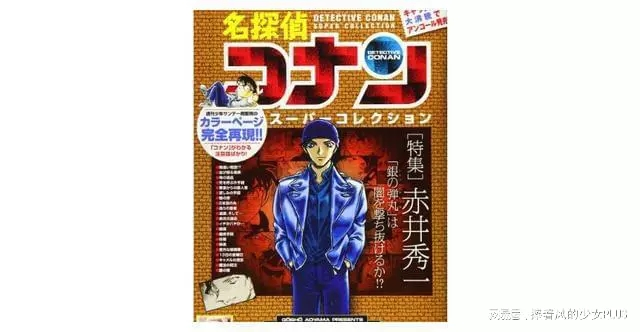
FBI的赤井秀一
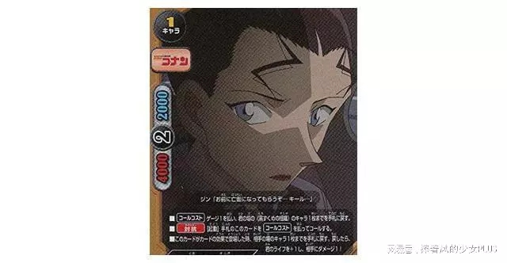
CIA的本堂瑛海动漫集数标题内容动画第385～387话漫画第46集斯托拉帝巴力欧斯不协调的和音得知苦艾酒发邮件给那位先生时的按键旋律为童谣《七个孩子》。动画第425话漫画第48～49集黑色冲击！被组织的魔掌触碰的瞬间表面为女主播，实际上为CIA卧底的基尔（本堂瑛海／水无怜奈）和黑衣组织的狙击手香缇、柯伦初登场。在这回FBI的茱蒂、詹姆斯、赤井秀一会与黑衣组织进行接触。动画第429～430话漫画第49集无法回头的二人和基尔（本堂瑛海／水无怜奈）长得非常相似的男孩初登场。真实身份为基尔的弟弟本堂瑛佑。动画第484～485话漫画第56集黑色照片的去向基尔（本堂瑛海／水无怜奈）的父亲伊森·本堂初登场。动画第491～504话漫画第56～59集红与黑的碰撞揭开了基尔（本堂瑛海／水无怜奈）和本堂瑛佑的真面目与赤井秀一的过去，为FBICIA篇的高潮处，连接了之后的「日本公安警察篇」。【日本公安警察篇】
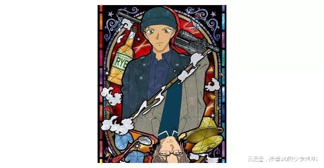
赤井秀一与冲矢昴
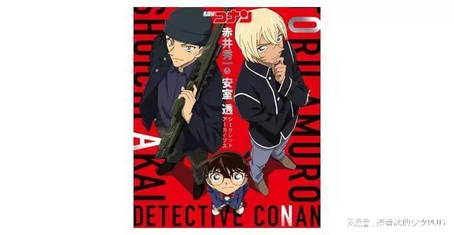
赤井秀一与安室透动漫集数标题内容动画第509～510话漫画第60集动画第511话漫画第61集红白黄与侦探团＆柯南VSW暗号推理推理对决！新一VS冲矢昴冲矢昴首次登场。动画第563～564话漫画第65集侦探团VS强盗团和应该已经死掉的赤井秀一长的相似的男人出现在茱蒂面前。动画第578～581话漫画第67集危机的红色前兆黑色13的暗示逼近的黑色时限红色摇晃的瞄准物黑衣组织因为貌似赤井秀一的男人的出现而慌乱。冲矢昴和茱蒂第一次见面。动画第646～647话漫画第73集幽灵饭店的推理对决世良真纯首次登场。动画第667～668话漫画第75集婚礼前夕安室透首次登场。动画第671～674话漫画第76集侦探们的夜想曲可能为黑衣组织成员的3人世良、安室、冲矢登场。动画第699～700话漫画第77集逼近灰原秘密的黑影灰原的真实身份被世良真纯发现。动画第701～704话漫画第78集漆黑的特快列车黑衣组织在举办推理活动的神秘列车上寻找灰原的身影，另外在列车中还出现了安室透、冲矢昴与貌似赤井秀一脸上有烧伤的男人，但其实烧伤的赤井秀一为苦艾酒假扮，为了炸死灰原而引爆了列车，但其实在爆炸现场的灰原其实是怪盗基德所假扮的，在列车停靠后苦艾酒发现雪莉未死，却未告诉其他组织成员。另一方面安室对赤井的死再度起疑，决定重启调查。动画第705～706话漫画第78集密室中的柯南＆揭开谜底的波本目的达成后，波本（安室透）没有回到黑衣组织，而是待在柯南的身边。动画第731～732话漫画第80集现场邻人是前男友羽田秀吉首次登场。真实身份为赤井秀一的弟弟、世良真纯的哥哥。动画第734话漫画第80集茱蒂的追忆与赏花的陷阱柯南和茱蒂被波本、苦艾酒监视。动画第754～756话漫画第82～83集赤女的惨剧柯南第一次知道「领域外的妹妹」之存在。并在这里得知世良的兄弟姐妹的姓氏全部都不一样，世良为母亲的旧姓。动画第759～760话漫画第83集恋爱小说的意外结果领域外的妹妹（玛丽世良）首次登场。动画第770～771话漫画第84集气氛僵硬的茶会柯南注意到安室的真面目，并得知幼年时期的安室与灰原母亲宫野艾莲娜交情甚佳。动画第779～783话漫画第84～85集绯色的序追寻安室身为警察公安的真面目正式曝光，而赤井也脱去冲矢昴的假扮，并向安室表示对于苏格兰（诸伏景光）的死亡一事非常抱歉。【兰姆篇】
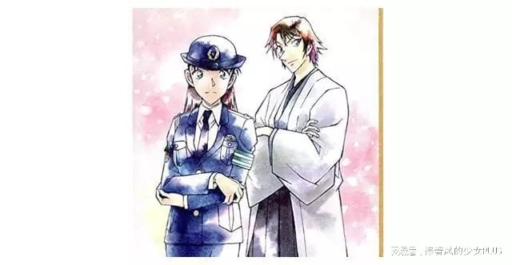
宫本由美与羽田秀吉
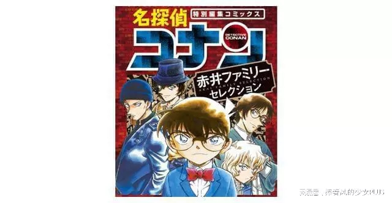
赤井家族动漫集数标题内容动画第792～793话漫画第86集三人是第一发现者从灰原打听出黑衣组织中的第二号人物兰姆（Rum）的外貌，但全为不一样的特征，分别为强大的男性、像女生般的男性、高龄的老人等，但是唯一确定的是右眼、左眼中的其中一眼为义眼，所以接下来出现的角色中若有义眼的人就极有可能是兰姆。动画第810～812话漫画第86～87集县警的黑暗黑田兵卫初登场。他是第一个被怀疑是兰姆的人物，因为十年前发生的意外，右眼为义眼，更因为冲击头发全变成白发。动画第836～837话漫画第88～89集关系不好的女子乐队苏格兰初登场。柯南透过世良对自己哥哥的描述，确认赤井与世良为兄妹关系，又得知赤井与苏格兰的关系匪浅。动画第849～850话漫画第89集结婚申请书的密码主要在描写羽田秀吉与宫本由美的恋情，从由美和秀吉的电话中得知，羽田浩司（几年前意外身亡的日本棋士）为秀吉的义兄（羽田秀吉为羽田家的养子），并且灰原告诉柯南，她曾在遭黑衣组织被强灌APTX-4869的名单上看过「羽田浩司」这名字。动画第861～862话漫画第89～90集与17年前同样的现场柯南开始对「羽田浩司」进行调查，借由一桩杀人案件得知赤井加入FBI的理由和赤井的父亲、羽田浩司有关。柯南和赤井后来得知羽田浩司遗留的死亡讯息为「ASACARUM」，并认为此杀人事件可能与「浅香」及黑衣组织的「兰姆」有关。动画第863～864话漫画第90集灵魂侦探杀害事件此回也和羽田浩司相关，并得知领域外的妹妹其实就是世良的母亲，因为被吃下APTX-4869而让身体变小。这起杀人案传到黑衣组织耳后，琴酒表示「羽田浩司事件」是兰姆17年前搞砸的事件，而琴酒也对沉睡小五郎的介入起了疑心。动画第866～867话漫画第90集背叛的舞台此回和剧场版《纯黑的恶梦》有关连。主要描写安室与赤井之间的因缘以及过去发生的事情。这集出现安室、赤井、苦艾酒三人对峙的画面，是非常重要的一回。
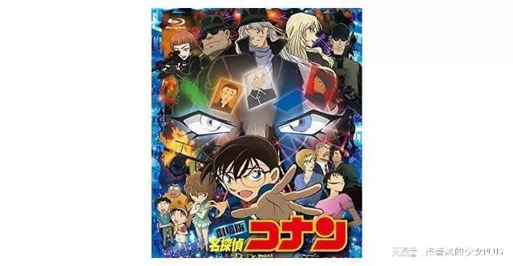
剧场版《纯黑的恶梦》
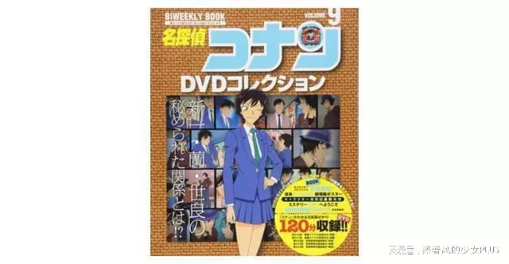
世良真纯动漫集数标题内容动画第881～882话漫画第92集涟漪中的魔法师柯南认为世良已经知道自己的真实身分为工藤新一，并也发现世良的二哥为羽田秀吉，而秀吉口中的「玛丽妈妈」正是「领域外的妹妹」，并猜测「领域外的妹妹」曾被人灌下APTX-4869，才会导致身体变小。动画第889～890话漫画第91集新任教师的骸骨事件帝丹小学的老师若狭留美初登场，虽然她表面上装作冒失、胆小、没意见的样子，实际上却实力不斐，被怀疑是兰姆的人物之一。动画第894～895话漫画第92集隔壁的江户前推理秀在寿司店工作的脇田兼则初登场，因为左眼用眼罩蒙住，所以也被怀疑是兰姆的人物之一。动画第909～910话/漫画第93集燃烧帐篷的怪物有可能是兰姆的两人黑田兵卫、若狭留美初次相见。动画第927～928话漫画第94～95集红色的修学旅行（鲜红篇恋红篇）为了参加帝丹高中的京都修学旅行，柯南恢复成新一。在此回世良确信了柯南就是新一的事实。动画第941～942话漫画第95集寻找玛莉亚！黑田、脇田、若狭三人得知新一在京都解决了案件后，若狭向灰原询问新一的事情，脇田则向博士询问新一家的事情，之后安室（波本）收到兰姆要求其提供工藤新一情报的讯息。赤井与工藤优作共同推理出羽田浩司所遗留暗号的真正讯息为「CARASUMA」，得知此案件与半世纪前充满谜团死去的日本富豪「乌丸莲耶」有密切相关。这一回是柯南的主线剧情中非常重要的一回，柯南粉必看！动画第952～954话漫画第95集充满谜团的鸡尾酒揭露了安室和宫野夫妇的过去，并当安室潜入工藤家后，发现赤井与工藤夫妇也在家中。动画第983～984话漫画第96集基德VS高明被瞄准之唇诸伏景光（苏格兰）的哥哥长野县警诸伏高明收到了一封信，表示弟弟成为公安后潜入某组织后殉职，根据信封上的「0」，推断寄件人应该为弟弟的好友外号「零」的安室透。此回和《名侦探柯南》番外篇《警察学校篇》有非常深的关系，有看《警察学校篇》的粉丝们一定要锁定这一回！动画第1003～1005话漫画第97集36方格的完美犯罪安室和脇田兼则出现在同一个事件的现场，并且诸伏高明也会登场。此回加深了脇田兼则为兰姆的嫌疑，是柯南主线中非常重要的一回！动画第1018～1020话漫画第97～98集无法隐藏的古董盘世良、冲矢、灰原、领域外的妹妹一起登场的一回。此回正式确定了领域外的妹妹的真实身份。历经将近30年连载的《名侦探柯南》，单行本在2021年10月18日已出版到第100集，重要的主线剧情也在各个杀人事件中循序渐进地发展，想要复习柯南关键故事的粉丝们，不妨将文章中统整出的重要集数挑出来重新看一遍吧！《名侦探柯南》主线演到哪？黑衣组织重要人物、剧情大纲、动漫集数对照整理！